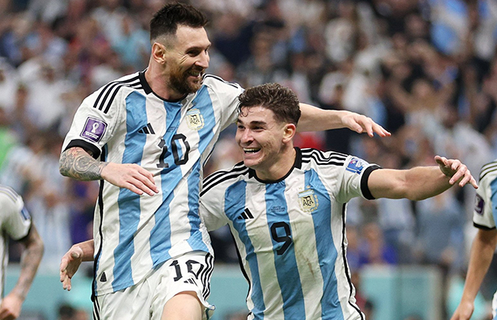

futbol profesional

River se prepara en san luis
Luego de los primeros días de trabajo en River Camp, el plantel se trasladó a San Luis, donde se encuentra realizando entrenamientos desde el martes 12 en el Estadio Juan Gilberto Funes. Con Matías Kranevitter ya incorporado al plantel, el equipo realiza jornadas en doble turno en las cuales se llevan a cabo ejercicos físicos, técnicos y tácticos.
Institucional

El semillero de River, presente en la final del Mundial
La de River y la Selección Argentina es una sociedad que atraviesa todas las épocas, que llenó de gloria a nuestro fútbol y que sigue más vigente que nunca en Qatar 2022. Porque el club que más futbolistas le aportó al equipo nacional a lo largo de la historia volvió a dejar su marca en el equipo de Scaloni, que llegó a la final del Mundial con la participación de seis futbolistas nacidos en nuestro semillero: Julián Álvarez, Enzo Fernández, Exequiel Palacios, Gonzalo Montiel, Germán Pezzella y Guido Rodríguez. Además, el Millonario le aportó al plantel al único de sus futbolistas que actualmente compite en el fútbol local: Franco Armani, quien además será el único jugador que actúa en ligas de Sudamérica presente en la final del Mundial.
futbol profesional
Con Julián figura, Argentina jugará la final del Mundial
Este martes por la tarde de nuestro país, la Selección Argentina hizo historia al avanzar una vez más a una final del mundo. Con juego, carácter y mucha contundencia, el equipo comandado por Lionel Scaloni venció 3-0 a Croacia y ahora aguardará por Marruecos o Francia, que disputarán mañana la otra semifinal.